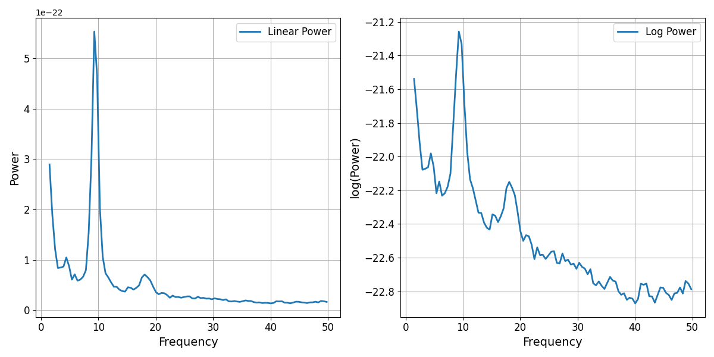
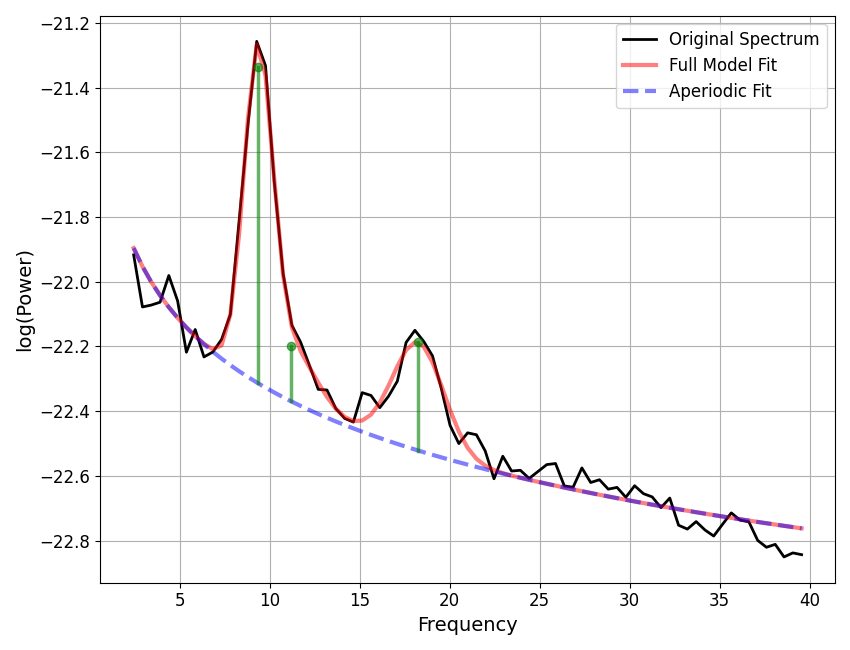
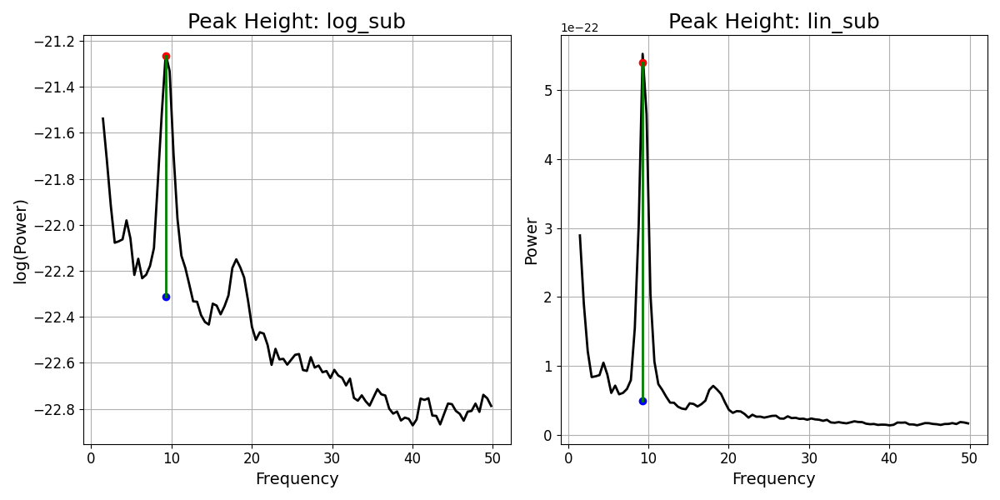

Note
Go to the end to download the full example code.
Component Combinations¶
Explore different approaches combining model components.
import numpy as np
import matplotlib.pyplot as plt
from specparam import SpectralModel
from specparam.plts import plot_spectra
from specparam.utils.array import unlog
from specparam.utils.select import nearest_ind
from specparam.utils.download import load_example_data
# Import function to directly compute peak heights
from specparam.convert.params import compute_peak_height
# Import the default parameter conversions
from specparam.modes.convert import DEFAULT_CONVERTERS
Introduction¶
In general, the approach taken for doing spectral parameterization considers the power spectrum to be a combination of multiple components. Notably, however, there is more than one possible way to combine the components, for example, components could be added together, or multiplied, etc.
An additional complication is that the power values of power spectra are often examined in log-power spacing. This is important as whether the implications of how the model components are combined also depends on the spacing of the data. To explore this, we will first start with some brief notes on logging, and then explore how this all relates to model component combinations and related measures, such as peak heights.
# Load example spectra - using real data here
freqs = load_example_data('freqs.npy', folder='data')
powers = load_example_data('spectrum.npy', folder='data')
# Define frequency range for model fitting
freq_range = [2, 40]
Some Notes on Logging¶
In order to explore the implications of how the different components are combined, we will first briefly revisit some rules for how logs work in mathematics.
Specifically, the relationship between adding & subtracting log values, and how this relates to equivalent operations in linear space, whereby the rules are:
log(x) + log(y) = log(x * y)
log(x) - log(y) = log(x / y)
When working in log space, the addition or subtraction of two log spaced values is equivalent to the log of the multiplication or division of those values.
Relatedly, we could note some properties that don’t hold in log space, such as:
log(a) + log(y) != log(x + y)
log(a) - log(y) != log(x - y)
Collectively, what this means is that the addition or subtraction of log values, is not equivalent of doing addition of subtraction of the linear values.
# Sum of log values is equivalent to the log of the product
assert np.log10(1.5) + np.log10(1.5) == np.log10(1.5 * 1.5)
# Sum of log values is not equivalent to the log of sum
assert np.log10(1.5) + np.log10(1.5) != np.log10(1.5 + 1.5)
So, why do we use logs?¶
Given this, it is perhaps worth a brief interlude to consider why we so often use log transforms when examining power spectra. One reason is simply that power values are extremely skewed, with huge differences in the measured power values between, for example, low frequencies and high frequencies and/or between the peak of an oscillation peak and the power values for surrounding frequencies.
This is why for visualizations and/or statistical analyses, working in log space can be useful and convenient. However, when doing so, it’s important to keep in mind the implications of doing so, since it can otherwise be easy to think about properties and transformations in linear space, and end up with incorrect conclusions. For example, when adding or subtracting from power spectra in log space and/or when comparing power values, such as between different peaks, we need to remember the implications of log spacing.
# Plot a power spectrum in both linear-linear and log-linear space
_, axes = plt.subplots(1, 2, figsize=(12, 6))
plot_spectra(freqs, powers, log_powers=False, label='Linear Power', ax=axes[0])
plot_spectra(freqs, powers, log_powers=True, label='Log Power', ax=axes[1])

In the above linear-linear power spectrum plot, we can see the skewed nature of the power values, including the steepness of the decay of the 1/f-like nature of the spectrum, and the degree to which peaks of power, such as the alpha peak here, can be many times higher power than other frequencies.
Model Component Combinations¶
Having explored typical representations of neural power spectra, and some notes on logging, let’s come back to the main topic of model component combinations.
Broadly,when considering how the components relate to each other, in terms of how they are combined to create the full model fit, we can start with considering two key aspects:
the operation, e.g. additive or multiplicative
the spacing of the data, e.g. linear or log
Notably, as seen above there is an interaction between these choices that needs to be considered.
# Initialize and fit an example model
fm = SpectralModel(verbose=False)
fm.fit(freqs, powers, [2, 40])
# Plot the model fit, with peak annotations
fm.plot(plot_peaks='dot')

To compute different possible versions of the peak height, we can use the
compute_peak_height() function. Using this function, we can compute measures of
the peak height, specifying different data representations and difference measures.
# Define which peak ind to compute height for
peak_ind = 0
# Compute 4 different measures of the peak height
peak_heights = {
'log_sub' : compute_peak_height(fm, peak_ind, 'log', 'subtract'),
'log_div' : compute_peak_height(fm, peak_ind, 'log', 'divide'),
'lin_sub' : compute_peak_height(fm, peak_ind, 'linear', 'subtract'),
'lin_div' : compute_peak_height(fm, peak_ind, 'linear', 'divide'),
}
# Check computing difference / division measures
print('log sub : {:+08.4f}'.format(peak_heights['log_sub']))
print('log div : {:+08.4f}'.format(peak_heights['log_div']))
print('lin sub : {:+08.4f}'.format(peak_heights['lin_sub']))
print('lin div : {:+08.4f}'.format(peak_heights['lin_div']))
log sub : +01.0444
log div : +00.9532
lin sub : +00.0000
lin div : +11.0776
As expected, we can see that the four different combinations of spacing and operation can lead to 4 different answers for the peak height.
We can also go one step further, and examine (un)logging the results, to explore if changing the spacing of the computed results aligns with any of the original calculations.
# Check logging / unlogging measures: un-logged log sub is same as linear division
print('Unlog log sub : {:+08.4f}'.format(unlog(peak_heights['log_sub'])))
Unlog log sub : +11.0776
# Check logging / unlogging measures: logged linear-division is the same as log subtraction
print('Log of lin div : {:+08.4f}'.format(np.log10(peak_heights['lin_div'])))
Log of lin div : +01.0444
In the above examples we see that changing the spacing of some results does line up with some of the previously computed estimates. As expected based on the log rules, unlogging the log-subtraction is equivalent to the linear division, and (vice-versa) logging the linear division is equivalent to the log-subtraction.
This also means that you cannot convert directly between spacing keeping the same operation, for example, you cannot convert to the linear-subtraction result by unlogging the log-subtraction result.
To summarize:
log / linear and difference / division all give difference values
- unlogging the log difference is the same as the linear division
unlogging the log difference does NOT give the linear difference
- logging the linear division is the same as the log difference
logging the linear difference does NOT give the log difference
Note that this is all standard log operations, the point here is to evaluate these different estimates in the context of spectral parameterization, so that we can next discuss when to select and use these different estimates.

Additive vs. Multiplicative Component Combinations¶
Given these different possible measures of the peak height, the natural next question is which is ‘correct’ or ‘best’.
The short answer is that there is not a singular definitive answer. Depending on one’s goals and assumptions about the data, there may be better answers for particular use cases. The different measures make different assumptions about the generative model of the data under study. If we had a definitive model of the underlying generators of the different data components, and a clear understanding of they related to each other, then we could use that information to decide exactly how to proceed.
However, for the case of neuro-electrophysiological recordings, there is not a definitively established generative model for the data, and as such, no singular or definitive answer to how best to model the data.
For any individual project / analysis, one can choose the approach that best fits the assumed generative model of the data. For example, if one wishes to examine the data based on a linearly-additive model, then the linear-subtraction of components matches this, whereas if one wants to specify a linearly multiplicative model (equivalent to subtraction in log space, and the kind of model assumed by filtered noise processes), then the linear-division approach the the way to go.
Within specparam, you can specify the approach to take for converting parameters post model fitting, which can be used to re-compute peak heights based on the desired model. For more discussion of this, see other documentation sections on choosing and defining parameter conversions.
# Initialize model objects, specifying different peak height parameter conversions
fm_log_sub = SpectralModel(converters={'periodic' : {'pw' : 'log_sub'}}, verbose=False)
fm_lin_sub = SpectralModel(converters={'periodic' : {'pw' : 'lin_sub'}}, verbose=False)
# Fit the models to the data
fm_log_sub.fit(freqs, powers, freq_range)
fm_lin_sub.fit(freqs, powers, freq_range)
# Check the resulting parameters, with different peak height values
print(fm_log_sub.results.get_params('periodic'))
print(fm_lin_sub.results.get_params('periodic'))
[[ 9.36187382 1.04444622 1.58733674]
[11.1723471 0.23008765 2.87693709]
[18.24843214 0.33140755 2.84640768]]
[[9.36187382e+00 4.92221811e-22 1.58733674e+00]
[1.11723471e+01 2.97585557e-23 2.87693709e+00]
[1.82484321e+01 3.46992592e-23 2.84640768e+00]]
Does it matter which form I choose?¶
In the above, we have shown that choosing the peak height estimations does lead to different computed values. However, in most analyses, it is not the absolute values or absolute differences of these measures that is of interest, but their relative differences.
Broadly speaking, a likely rule of thumb is that within the spectral parameterization approach, switching the model combination definition is generally unlikely to change the general pattern of things (in terms of which parameters change). However it could well change effect size measures (and as such, potentially the results of significant tests), such that it is plausible that the results of different model combination forms could be at least somewhat different.
Total running time of the script: (0 minutes 0.778 seconds)